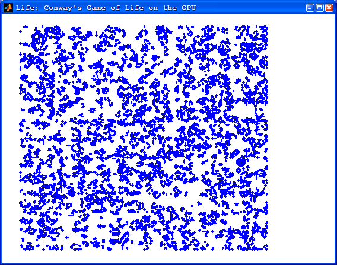

GPU Life Demo
Contents
Introduction
This demo plays Conway's Game of Life on the GPU. This is effectively a very simple "stencil" computation on the GPU, demonstrating how to use dynamically-sized shared memory. The thread block size can be configured at runtime. Each thread block loads a portion of the game board into shared memory, plus a border of "ghost cells". The amount of shared memory therefore depends on the thread block size.
function gpudemo_life( opt_N, opt_start_board )
Setting up the kernel
Define the name of the kernel that we are going to use, and locate the CU source and PTX file. See the code for the kernel
basename = 'life_kernel_dynblock'; cuname = sprintf( '%s.cu', basename ); ptxname = sprintf( '%s.%s', basename, parallel.gpu.ptxext() ); % Load the kernel object kernel = parallel.gpu.CUDAKernel( ptxname, cuname, 'life' ); % Choose the thread block size for playing the game of life. kernel.ThreadBlockSize = [16 16]; % The input data is of type |uint8|, and each thread block loads up a border % of ghost cells, therefore the total number of bytes of dynamic shared % memory required is as follows: kernel.SharedMemorySize = prod( (2 + kernel.ThreadBlockSize) );
Setting up the game board
Here we choose how many iterations to run the game over, define the starting game board, and set up the kernel grid size so that each thread operates on one element of the board.
if nargin < 1 N = 20; else N = opt_N; end % Choose the starting game board if nargin < 2 boardCPU = uint8( rand( 192, 192 ) > 0.5 ); else boardCPU = uint8( opt_start_board ); end % Extract the size of the board for calculating the kernel execution grid % size. [m, n] = size( boardCPU ); % Choose the grid size based on block size and board size kernel.GridSize = ceil( [n, m] ./ kernel.ThreadBlockSize(1:2) );
Creating the data on the GPU
Create the initial board as a GPUArray. This transfers the data to the GPU where it will be overwritten on each iteration of the game of life.
board = parallel.gpu.GPUArray( boardCPU );
Playing the Game of Life
Loop over the game of life. Note that "board" is overwritten each time.
% Set up the figure [~, ploth] = iGetOrCreateFigure( m, n ); for ii=1:N board = feval( kernel, board, m, n ); % Display the board [i, j] = find( gather( board ) ); set( ploth, 'XData', j, 'YData', i ); % Pause a short while drawnow(); pause( 0.05 ); end
snapnow;
end
Helper functions
Simple helper to create a figure with a plot similar to MATLAB's life demo
function [axh, ploth] = iGetOrCreateFigure( m, n ) tag = 'GPU:Life'; figh = findall( 0, '-depth', 1, 'Tag', tag ); if isempty( figh ) figh=figure( ... 'Name','Life: Conway''s Game of Life on the GPU', ... 'NumberTitle','off', ... 'ToolBar', 'none', ... 'MenuBar', 'none', ... 'IntegerHandle', 'off', ... 'HandleVisibility', 'off', ... 'DoubleBuffer','on', ... 'Visible','on', ... 'Color','white', ... 'BackingStore','off', ... 'Tag', tag ); end clf( figh ); figure( figh ); axh = axes( ... 'Parent', figh, .... 'Units','normalized', ... 'Position',[0.05 0.05 0.75 0.90], ... 'XLim', [0 n + 1], ... 'YLim', [0 m + 1], ... 'Visible','off', ... 'DrawMode','fast', ... 'NextPlot','add'); ploth = line(0,0, ... 'Marker', '.', ... 'LineStyle', 'none', ... 'Color','blue', ... 'MarkerSize',12, ... 'Parent', axh ); end